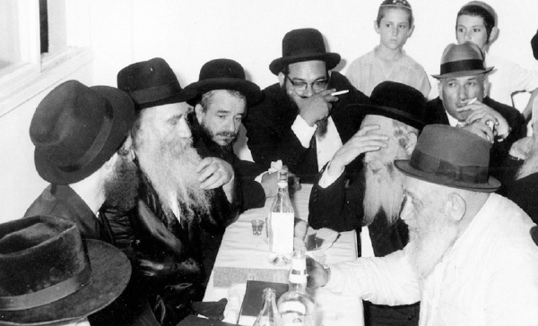

The Art of Chassidic Storytelling in Tzfas
Rabbi Yerachmiel Tilles, co-founder of the internationally acclaimed Ascent Institute of Tzfas, went through his own intriguing journey in the world of sports and philosophy. Today, he sends people to the Arizal’s Mikveh, and the results are virtual spiritual revolutions. This is his amazing life story with accounts of his personal audiences with the Rebbe and a vivid description of his wide-ranging outreach activities. Part 2 of 2
Translated by Michoel Leib Dobry

After spending two years in Thailand, Yerachmiel Tilles returned to the United States, and shortly thereafter, went on a backpacking trip in California. After a lengthy period of wandering, he found himself renting an apartment farmhouse with six friends from his years at the State University of New York at Binghamton. This was a unique time. “Many people were getting interested in macrobiotics, and I had already become involved in this hot new ‘trend’ in California.
“I and one of the others became the cooks. We would prepare vegetarian food scrupulously in a macrobiotic style. We were extremely busy. One day, I ran into a friend who worked in a famous macrobiotic restaurant in Boston. He told me about a special teacher in the field of macrobiotics, and he suggested that we ask him to come to Binghamton to give a lecture. When I called him, he said that he was just about to start a lecture tour throughout the United States, and he happily agreed to add a stop in upstate New York.”
This lecturer was none other than Dr. Meir Abuchatzera, who was privileged to receive special attention from the Rebbe when he instructed him to whistle during farbrengens. At the time, however, he was still a ‘fresh recruit,’ beginning his spiritual journey into the world of Chabad. With the passage of time, he had become one of the three main ‘masters’ at learning and application centers specializing in macrobiotics.
“We became good friends. He established his residence not far from us, and he asked me to help him in the preparation of a book on the subject of alternative medicine. He was the first person to tell me about the Rebbe and the teachings of Chassidus. I started participating in his Shabbos meals, eventually becoming Shabbos observant. The tranquility and detachment of Shabbos fascinated me.
“One day, I asked Abuchatzera how he explains the fact that such a dramatic percentage of people involved in macrobiotics are Jews. He replied that the very essence of macrobiotics is proper balance, an issue connected with the nature of justice and truth, and Jews are inherently drawn to pursue truth. His words sharpened my perception of the unique character of the Jewish People. Later, long before the establishment of the Chabad Student Center at SUNY-Binghamton, my friends and I—all newly observant!—erected a sukka before the Sukkos holiday that attracted one hundred and fifty Jews, mostly students, to participate in the first night of Yom tov. Even the local Reform ‘rabbi’ dropped in, and nearly all the students decided spontaneously to walk the two miles back to the campus rather than drive…”
The first time that Yerachmiel put on t’fillin since his bar-mitzvah was during a visit to Crown Heights on Purim 5732. “I was privileged to stay at the home of Rabbi Akiva Greenberg, of blessed memory. Before we went to 770 for the Rebbe’s farbrengen, I asked him to teach me something Chassidic on the Purim holiday. He smiled and said, ‘Pick one drink and stick to it…’
“Prior to the Rebbe’s farbrengen, I participated in a farbrengen for baalei t’shuva at Yeshivas ‘Hadar HaTorah.’ Except for myself, everyone there was totally intoxicated. There were moments when I thought: What makes this different from all the parties we organized in college? However, when I heard what issues the inebriated bachurim were discussing, the difference was quite apparent. While drunkenness in college led to decadence, the same thing occurring in Crown Heights caused people to focus on their spiritual state.”
Three months later, on the eve of the Shavuos holiday, Rabbi Tilles and four friends came to spend Yom tov in 770. They were particularly enthralled by Rabbi Avraham Levi Lipskier, who farbrenged with them for several hours until the wee hours of the morning.
“I eventually moved to Crown Heights. While I had to work, I learned conscientiously at night in ‘Hadar HaTorah,’ mostly with Rabbi Abba Pliskin, of blessed memory, both before and after my marriage. Shortly before the wedding, the rosh yeshiva, Rabbi Yisroel Jacobson, of blessed memory, arranged a private audience for me with the Rebbe. The level of excitement within me was very great indeed. As a ‘first-timer,’ I was warned not to try to shake hands with the Rebbe. But as soon as I entered the Rebbe’s office, he extended his hand to me. At first I panicked, but then I figured it out and handed him an invitation to the wedding. The Rebbe looked at the invitation, and then he turned his head towards the foot and a-half high stack of letters near his desk. Among the hundreds of letters piled there, he immediately pulled out the note I had submitted. I was amazed.
“Afterward, I was joined by my future wife and both sets of parents. The Rebbe got up from his chair, walked toward them, and invited them to sit on chairs placed near the window. As I had also been warned about not sitting down, I remained standing against the wall near the door.
“After the Rebbe finished speaking, he asked the parents if any of them had a question for him. My mother said that they were all worried how the young couple would make a living. The Rebbe smiled and replied: ‘G-d takes care of the sustenance of four billion people in the world. Surely He will be able to provide for another two…’”
After their wedding, R’ Yerachmiel and his new wife established their residence in Brooklyn’s Flatbush neighborhood. Rabbi Tilles worked on the writing of Rabbi Abuchatzera’s new book. The biggest difficulty was being so far away from 770 on Shabbos and Yom tov, and this pushed them to search for an apartment in Crown Heights. “The apartment we found was located on the upper floor of the Baumgarten home. We asked the Rebbe for a bracha, but none was forthcoming. In the meantime, Mrs. Baumgarten told us that there was another couple that had been interested in the apartment before us, but they hadn’t received a bracha from the Rebbe either. ‘Whoever receives the Rebbe’s bracha first can move in,’ she said.
“I submitted my request again, but again there was no answer. But the other couple didn’t get an answer either. By this time, I already understood that if the Rebbe doesn’t give an answer, there must be a reason. Suddenly, I had a thought: Our landlord in Flatbush, a Holocaust survivor, liked us very much. After he finished the Friday night meal in his own home, he would come down and join us at our table. We had a one-year contract with him, which still had a few months to go. I realized that we needed to ask his permission to leave before we could move anywhere. With much regret, he gave his consent. I composed a third letter to the Rebbe, including the landlord’s permission. That same day, we received a positive answer, and we immediately signed the rental agreement.”
THE START OF OUTREACH WORK IN TZFAS
In Tishrei 5738, Rabbi Tilles and his wife received a gift from his in-laws: airline tickets for an extended trip to Eretz HaKodesh.
“We toured Eretz Yisroel for six weeks, and this included a visit to Tzfas. I was enchanted with the city. The ‘Beit Chana’ Chabad high school for girls had been founded a few years earlier, and someone working there had promised me a position with the school as an English teacher if we would make aliya and settle in Tzfas. Around this time, I also had a shlichus offer in California and a regular job possibility in New York. We decided to ask the Rebbe for his advice and blessing.
“As soon as we returned to Crown Heights, I submitted a letter with my three options to the Rebbe’s secretariat. We received an answer a few days later. Under the words ‘English teaching position in Tzfas,’ the Rebbe drew a line. It came as a tremendous surprise for many people that the Rebbe had instructed someone other than the official shluchim to settle in Tzfas. At a special pre-departure gathering that friends organized for us in Crown Heights, many people came to take part, including the Rebbe’s secretary, Rabbi Yehuda Leib Groner.”
The Tilles’ first stop in Eretz HaKodesh was at the immigrant absorption center in Kfar Chabad, and a few months later, they began their trek north - to the Holy City of Tzfas. When Rabbi Tilles speaks about the shlichus in Tzfas, he adds yet another interesting anecdote: “In Tishrei 5741, I traveled to the Rebbe for the holiday season. Before returning to Eretz Yisroel, I was privileged to go in for a ‘yechidus.’ During this private audience, the Rebbe gave me several bills of Israeli liras and said, ‘When you return to Tzfas Ir HaKodesh, you will surely give them to tz’daka.’
“When I told this to my fellow shluchim from Tzfas, they were very surprised. The Rebbe had only said to them, ‘When you return to Eretz HaKodesh…’”
From 5740 to 5743, together with his studies in Tzfas’ “Tzemach Tzedek” Kollel, Rabbi Tilles entered a partnership with the well-known local artist, Yaacov a”h Kaszemacher. The two established an art gallery in the Old City. There were many people who came into the gallery, ostensibly to inquire about the artwork on display, who instead asked us questions about Yiddishkait. At this point, I started to feel that we must do something in the area of spreading the wellsprings of Chassidus to English speakers. As a result, I made a momentous connection with two of my fellow avreichim, Rabbi Moshe Yaakov Wisnefsky and Rabbi Shaul Leiter. I remember the date well - Asara B’Teives 5743 - when the three of us sat together to consider what to do and how to do it. We decided to establish a pre-yeshiva program for three weeks in Elul, giving those who wanted to tour the Holy Land an opportunity to learn a little Torah. The program drew four participants, three of whom went on to learn in regular yeshiva programs.
“The next activity was a five-day seminar program, organized around Shabbos B’Reishis 5744. We were hoping for 25-30 participants. Thus, we were shocked when more than eighty young people arrived! Later, there were other extended Shabbos and holiday events.”
A few months later, on the 18th of Shvat 5744, the first answer from the Rebbe on the reports the young trio had sent arrived. Their activities had apparently given the Rebbe much pleasure:
By the Grace of G-d
18 Shvat 5744
Brooklyn, N.Y.
To all the men and women participants in the activities strengthening and spreading Judaism, headed by Mr. Yerachmiel, Mr. Moshe Yaakov, and Mr. Shaul Yosef in Tzfas,
G-d’s grace upon them, may they live and be well.
Greetings and Blessings:
I was pleased to receive the gladdening news about your activities in spreading Judaism, permeated by the light and warmth of Chassidus, and performed with dedication and enthusiasm.
We see clearly that projects done with joy and enthusiasm are especially successful.
May it be G-d’s will that you continue, in a manner of growth and increasing light.
If these activities are necessary everywhere, then how much more so in our Holy Land, “a land that G-d’s eyes are upon it, from the beginning of the year to the end of the year,” and especially in the holy city of Tzfas.
A timely note: This letter is being written on the day following Shabbos Parshas Yisro, the main theme of which is the Giving of the Torah - the Living Torah from the Living G-d, received unanimously by the entire Jewish people, men and women, with the enthusiastic call: “We will do and we will understand!”, prefacing “we will do” to “we will understand.” All the Jewish souls of all generations until the end of time were there and participated in this call.
With blessings for success and good tidings in all the aforementioned,
/the Rebbe’s holy signature/
P.S. It is obvious that the contents of this general letter apply to each man and woman involved, may they live and be well, just as if it had been written to each one individually.
CHASSIDIC STORYTELLING
After a year of intensive activities, Ascent’s three co-founders came up with an idea that would help the institute keep in contact with its students, and also reach Jews throughout the world - publishing a quarterly newspaper. “At first, there were some concerns. I had been involved in publications before, and I knew how difficult it was to churn out material on a consistent basis. However, my two colleagues convinced me to take on the project, and I agreed to do so. Over a period of fourteen years, from the fall of 5745 to the winter of 5759, we regularly produced a magazine filled with Jewish and Chassidic content.”
“I also taught at the ‘Machon Alte’ Institute in Tzfas for baalos t’shuva. One day, a baalas t’shuva came into class and told the other students about how she had returned to her Jewish roots. Over a period of several years, she had lived in a ‘hippie’ commune somewhere in California, until she became disgusted by this lifestyle. However, she couldn’t seem to find an alternative. Then, she got hold of a magazine from Eretz Yisroel, which she mentioned by name. After reading it, she decided to become Torah observant. Of course, this was the periodical that we had produced, and it somehow reached her.”
In recent years, Rabbi Tilles has been running two Internet sites operated by the ‘Ascent’ Institute. He posts op-eds and Chassidic stories, in addition to answering questions posed by web users throughout the globe. “The first site is Ascent’s English site, and I write a weekly story or take one from outside sources, while Rabbi Leiter composes his own article on the weekly Torah portion. The second site, ‘KabbalahOnline.org’, contains articles on Kabbalah and Chassidus, writings of the Ari translated into English, and more.” As part of his Internet work, Rabbi Tilles comes across a variety of different questions. “We receive numerous questions at the site on personal relationships and reincarnation - subjects that really grab people.”
Rabbi Tilles is known as someone who can tell a good story that can enrapture his listeners. In the past eighteen years he has publicized close to 900 delightful ancient Jewish stories. These stories have been posted on numerous Internet site.
“In the past, I would only tell stories verbally. In general, even from a very young age, when people would ask me questions, I would answer them with a story. During the Shabbos meals at the home of Rabbi Abuchatzera in Binghamton, my job was to tell a story. When I came to Tzfas and started giving classes at ‘Machon Alte,’ I saw that when I told a story, the girls would start listening most attentively. I then organized that every Erev Shabbos they would come to our house and I would tell them a sicha from the Rebbe and a story.”
What is your creed when it comes to writing and telling Chassidic stories?
“I look for real stories with a ‘Heavenly connection,’ albeit containing some practical aspect to them. On the subject of stories, I am a Chassid of the Rebbe Rayatz. I love to write stories with all the details, occasionally including personal information on the story’s main protagonist - his parents, his birthplace, his life’s work. The details give the stories greater credibility for their readers.”
THE HOLY CITY OF MYSTICISM AND ITS MAGICAL WONDERS
Rabbi Tilles speaks with much emotion about the institute he helped found. “People always ask us to open a branch in other cities. However, I am certain that the connection between ‘Ascent’ and the city of Tzfas is something that cannot be produced anywhere else. The examples are endless.
“One Shabbos, I was running ‘Ascent’s’ Seuda Shlishis. Numerous guests had arrived that week, and at the start of the meal, total chaos reigned. In the midst of all this bedlam, a Jew came in wearing short pants, accompanied by a woman who was obviously Gentile. ‘Who’s in charge here?’ he asked, and people directed him to me. ‘It’s very hot today,’ the man said. ‘Do you know of a pool where we can cool off from the heat?’ At first I was stunned that I was being asked such a question in the middle of Shabbos, and I thought that I should evade the question diplomatically. Then, I quickly got a brainstorm; I would send this fellow to the Ari’s Mikveh…
(Laughing) “I explained to him how to get to the ‘pool,’ located five minutes from ‘Ascent.’ About half an hour later, the man returned with complaints: ‘Where did you send me? What was that place! What is this place!’ he cried. I just smiled. Six months later, I heard from Rabbi Kasriel Kastel, activities director of the Lubavitch Youth Organization in New York, that this couple had returned from their visit to ‘Ascent’ with an entirely different outlook. The young man has begun learning about his Jewish roots, while his Gentile girlfriend began the process of undergoing a halachic conversion.
“I recall another story that also expresses the uniqueness of Tzfas. One weekday, four people came into ‘Ascent’: a man, his two daughters, and his son-in-law. The father told us that he was a big expert in alternative medicine, specializing in ‘crystal healing,’ and he wanted to learn what Kabbalah has to say on the subject. In order to impress me further, he pulled some ‘crystals’ out of his knapsack and tried to perform a few mystical tricks. However, he was unsuccessful. He said that since it worked everywhere else in the world, he couldn’t understand what had happened. I smiled and explained to him that Tzfas is a mystical city with a very unique atmosphere, and therefore, the crystals won’t work here as expected.
“A special connection developed between us, and before he and his family left, the man asked for a suggestion on how to utilize his remaining time properly before they headed to Tel Aviv. I recommended that he should go to the Ari’s Mikveh. He listened to my advice, and when he came back, he was deeply moved. He gave a generous donation to our activities, and we warmly said goodbye. Six months later, I heard from some of our guests that there was a wealthy man in Manhattan (they told me his name) who had told them about a big Kabbalist in Tzfas who had changed his life. Imagine that… He had left all the avoda zara nonsense, became observant, and became a major contributor to several institutions in the area where he lives…”
Is there a difference between the people to whom you reached out thirty years ago and those you encounter today?
“There’s a great difference. Thirty years ago, most people were searching for the unvarnished truth. They were more spiritual, looking for greater depth and inner meaning. When we asked the students what they were learning in college, they mostly said philosophy and social sciences. This was an entirely different generation, and they had been raised on hatred and estrangement towards Judaism. However, when they encountered the light of Torah, they followed it all the way.
“People now are far more willing to listen and the level of opposition has been reduced. However, they are in no rush to make major changes in their lifestyles. Thus, to a certain degree, the t’shuva process is more difficult and complex than ever before.
“Today’s generation is primarily consumed with establishing lucrative careers, and people are only interested in a taste of spirituality without really eating. People don’t want anything too deep that might lead them to a major transformation of their lives. There’s a feeling that they have neither the time nor the emotional ability for something really profound.”
Quite often, you encounter American Jews who are members of Reform temples. What is the best way to show them their mistake and lead them to the path of truth?
“Many Reform Jews come to us at ‘Ascent,’ including ’rabbis’ both male and female, and it’s amazing how many of them tell me that their great-grandfather in Europe was a Chassid or Torah scholar. I tell these people how obvious this is, because if they didn’t have any genuinely Orthodox roots, they would have become totally assimilated a long time ago. For example, at the end of the nineteenth century, the first Reform temple was established in Manhattan - ‘Congregation Emanuel.’ Researchers a generation ago investigated the status of the progeny of its first board of directors and where these descendants are today. Regrettably, already thirty years ago, all of them were Gentiles. These are the facts, and I explain them to anyone willing to listen. Orthodox Judaism is what continues and maintains our traditions. The historical reality has proven that anyone who deviates from this path eventually disappears.
“A Reform Jew wants to feel Jewish, but without making any commitments. He tries to have an experience without making any effort, and it turns out that this simply doesn’t work.”
Shortly before Purim, ‘Ascent’ held a unique evening introducing Rabbi Tilles’ first book, ‘Saturday Night - Full Moon,’ a collection of Chassidic stories with a special supplement on various customs relating to Melaveh Malka. This is the first seifer in a three-volume series, including one of stories on Shabbos and the Jewish holidays.
The Rebbe asks that everything be instilled with the concept of bringing the revelation of Moshiach. How do you do this at ‘Ascent’?
“Each of us at ‘Ascent’ deals with the subject of Moshiach b’ofen ha’miskabel (in a way that will be accepted by those whom we seek to influence) in his own personal style. Since I have been privileged to run the weekly Melaveh Malka, the meal of Dovid Malka Meshicha, it goes without saying that this gathering must include a discussion about Moshiach. We bring quotes from the Zohar regarding how those eating at this meal must mention the connection between Dovid HaMelech and Moshiach Tzidkeinu, and its meaning in these times. A full section on this subject appears in my new book. Furthermore, all of our activities include spreading the words of the Rebbe throughout the world.
“The Rambam states that one of the signs of Moshiach is his teaching of Torah to the entire Jewish People. Over the past eight hundred and fifty years since then, I don’t believe that anyone has understood these concepts as well as they do today, in this generation of such tremendous technological development. The Rebbe’s teachings are available via videos, internet and smartphones, as well as print publications, and can be found everywhere. This applies with even greater force on the subject of Moshiach Tzidkeinu. In my case, a person can sit in some isolated location of the world and send me a question on Shulchan Aruch, Chassidus, or Kabbalah, and receive an answer within a few minutes.”
Saturday Night, Full Moon is available for purchase in Tzfas at Ascent and KabbalaOnline-Shop.com, or from the publishers, Menorah-books.com, and very soon in all major Jewish bookstores.
Nosson Avrohom. "The Art of Chassidic Storytelling in Tzfas." Beis Moshiach, no. 927 (May 21, 2014).